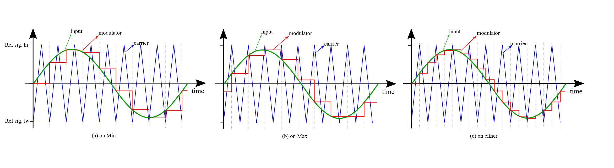
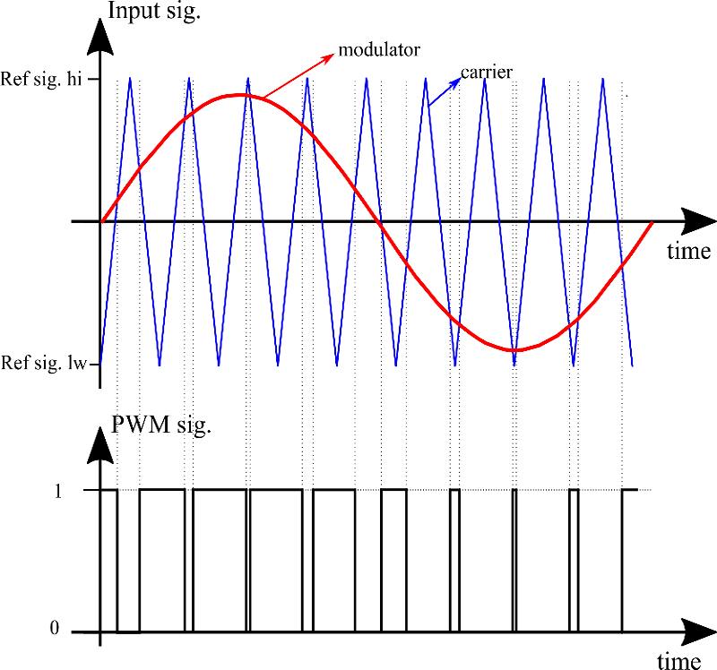
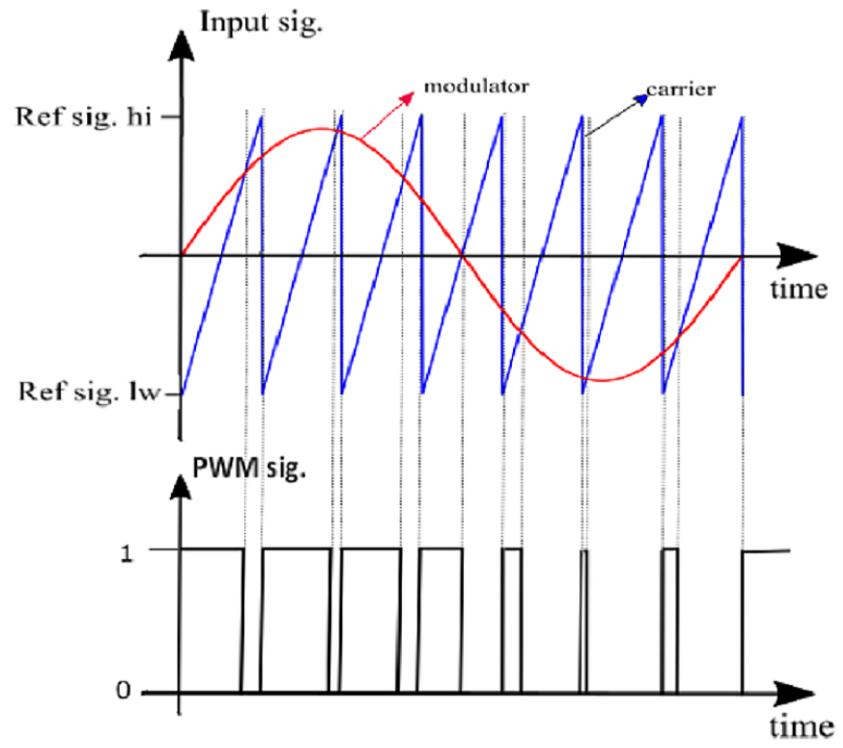
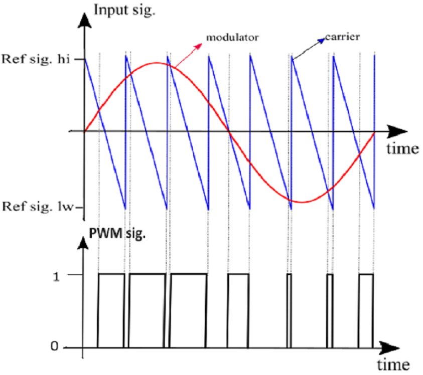
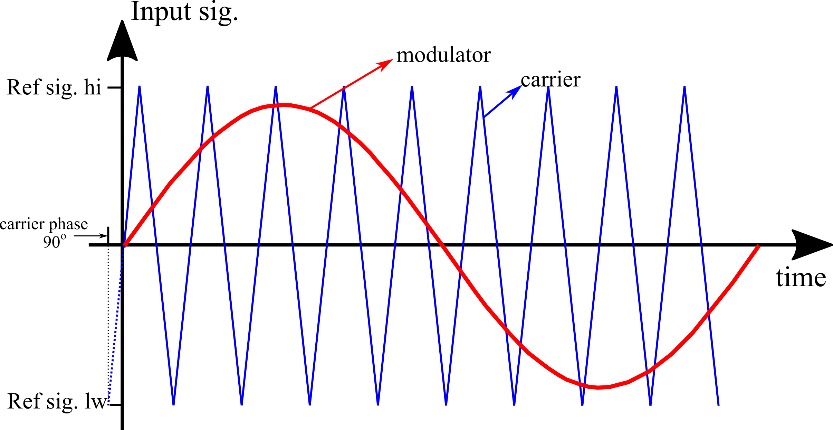
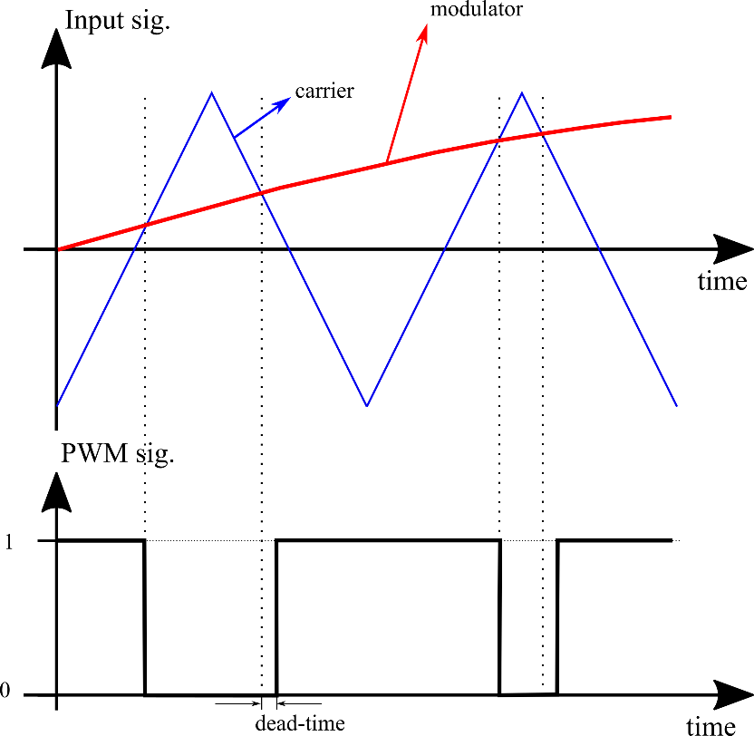

PWM modulator
Description of the PWM modulator component in Schematic Editor.
Description
This component represents a multi-channel PWM modulator with a dead time generator and a carrier from 100 Hz up to 500 KHz. There are three options for the carrier signal: symmetrical triangular, sawtooth - rising, and sawtooth - falling. In real-time simulation, the PWM modulator is based on a dedicated hardware unit, and it operates at the frequency of the device's clock. More information is available in the IO Timing section of each HIL Simulator device's documentation. In TyphoonSim, PWM modulator generates gate signals with a resolution of 2.5 ns.
The component outputs are available in a digital signal map. In real-time simulation, component outputs can be individually routed to any of the device's digital outputs. In TyphoonSim, component outputs can be individually routed through virtual IO loopback.
The carrier is characterized by a triangular, sawtooth - rising, or sawtooth - falling waveform with fixed or variable frequency and fixed or variable phase offset.
In case of variable frequency, an additional terminal is created on the component for connecting the signal that represents the carrier frequency.
Similarly, in case of variable phase offset, additional terminals are created on the component for connecting the signals that represent the variable carrier phase offset for each PWM channel.
Lower and upper levels of the reference signal are defined in the property Reference signal [min, max]. If the signal is outside the range, the signal will be cut off.
For a tirangle carrier with fixed carrier frequency it is possible to specify when the modulating signal will be updated with the input value, based on the carrier value. The modulating signal can be updated when the carrier reaches its minimum, maximum or either value. Figure 1 shows the different behaviors of the load modes.

The generated PWM signal has a dead time period that can be configured by adjusting the component's Dead time period property.
The PWM generator is able to generate up to 12 PWM signals. Each PWM signal is generated according to the carrier frequency of the component, the individual modulator signal, and the individual phase offset signal.
Figure 2 illustrates a PWM signal generated through the comparison between the reference (modulator) signal and the triangular carrier signal.
Figure 3 illustrates a PWM signal generated through the comparison between the reference (modulator) signal and the sawtooth-rising carrier signal.
Figure 4 illustrates a PWM signal generated through the comparison between the reference (modulator) signal and the sawtooth-falling carrier signal.



Phase offset
The carrier signal of the PWM modulator can be delayed by a fixed or variable phase offset. If Fixed carrier phase offset is set on the Phase operation mode component’s properties, then the phase of the carrier is the same for all generated PWM signals of the component and can be set through the Carrier phase offset property on the component.
However, if the operation mode for the carrier phase is set to Variable carrier phase offset, each PWM signal generated by the component is individually calculated and their values depend on the component’s input that is dynamically created for this purpose.

Dead time
The PWM signal generated by the component has a dead time that can be adjusted through the Dead time period property. Figure 6 shows a PWM signal that is generated with some dead time.

Ports
- Enable en (in)
- Input signal that enables the component to generate the PWM signals. If this input
is set to “0”, the component doesn’t generate PWM signals. For values higher than
“0”, the component is enabled and PWM signals are generated.
- Supported types: uint, int and real.
- Vector support: no.
- Input signal that enables the component to generate the PWM signals. If this input
is set to “0”, the component doesn’t generate PWM signals. For values higher than
“0”, the component is enabled and PWM signals are generated.
- Input inX (in)
- Modulator signal of the “X” channel of the PWM modulator, where X = 1, 2, …, N, and
“N” is the number of channels set on the component’s
property.
- Supported types: uint, int and real.
- Vector support: no.
- Modulator signal of the “X” channel of the PWM modulator, where X = 1, 2, …, N, and
“N” is the number of channels set on the component’s
property.
- Offset X (in)
- Available if Variable carrier phase offset is selected as phase operation mode.
- Carrier phase offset for the “X” channel of the PWM modulator, where X = 1, 2, …, N,
and “N” is the number of channels set on the component’s
property.
- Supported types: uint, int and real.
- Vector support: no.
- Dynamically created according to Phase operation mode
- freq (in)
- Available if Variable carrier frequency is selected as Operation mode.
- Frequency of the carrier of PWM modulator component.
- Supported types: uint, int and real.
- Vector support: no.
- Dynamically created according to the operation mode
- Limits: [100 Hz, 500 kHz]. If input value is outside allowed range, value will be set to appropriate limit value.
- st (out)
| bit | meaning |
|---|---|
| 0 | The frequency of the carrier signal is changed before at least one of its periods is completed; thus, generated PWM signals may be inaccurate. |
General (Tab)
- Carrier
- Choose the type of the carrier signal. Available options are: Triangle, Sawtoooth - rising and Sawtoooth - falling.
- Operation mode
- Choose the operation mode of the PWM modulator. Available modes are: Fixed carrier frequency and Variable carrier frequency.
- Carrier frequency (Hz)
- Type in the frequency of the PWM generated signal. This property is available only when the operation mode is set to Fixed carrier frequency.
- Phase operation mode
- Choose the operation mode of carrier phase offset. Available modes are: Fixed carrier phase offset and variable carrier phase offset.
- Carrier phase offset
- Type in the value of the phase displacement of the carrier signal in degrees. This property is available only when the phase operation mode is set to “Fixed carrier phase offset”.
- Number of channels
- Choose the number of channels of the PWM modulator. This property defines how many PWM signals will be generated by the PWM modulator component and, consequently, the number of inputs that will be created for the modulator signals.
- Dead time period
- Type in the dead time period of the PWM signal, in seconds.
- Reference signal [min, max]
- Type in the minimum and maximum values of the carrier signal of the component.
- Load mode [on min, on max, on either]
- Available if Triangle is set as Carrier.
- Choose the instant when the input reference value is updated according to the triangular carrier signal: only at its minimal value, only at its maximum value, or at both extremes.
- Execution rate
- Type in the desired signal processing execution rate. This value must be compatible with other signal processing components of the same circuit: the value must be a multiple of the fastest execution rate in the circuit. There can be up to four different execution rates. To specify the execution rate, you can use either decimal (e.g. 0.001) or exponential values (e.g. 1e-3) in seconds. Alternatively, you can type in ‘inherit’ in which case the component will be assigned execution rate based on the execution rate of the components it is receiving input from.
Extras (Tab)
- Signal access
- Gives you the opportunity to set Signal Access Management for the component.
- Status
- Enables st(out) port for reporting error occurrences.